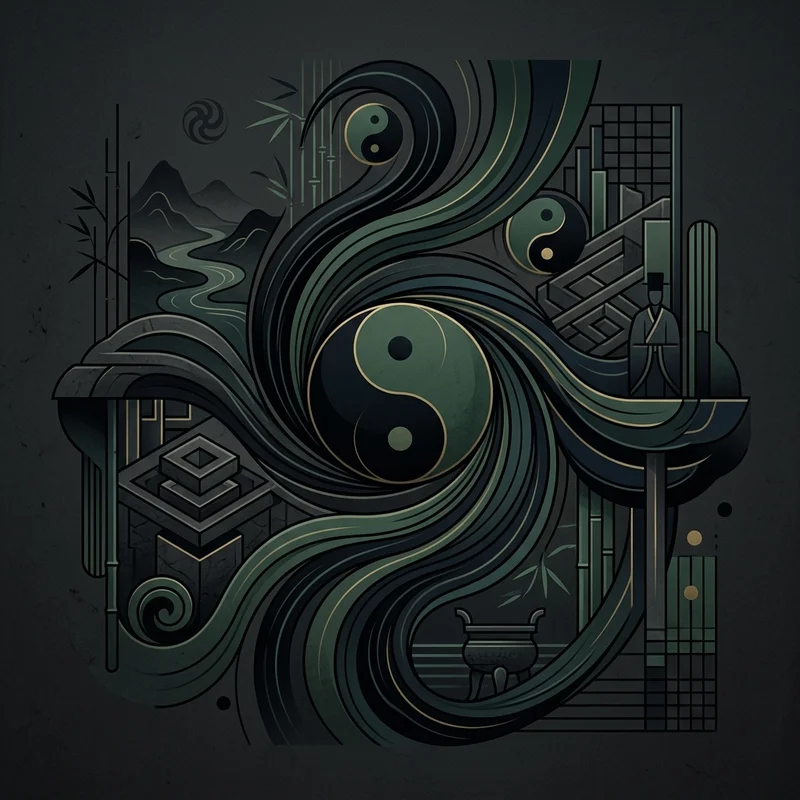

🔍 ZoomWichtige Denker
Kerngedanken
Im Zentrum der chinesischen Philosophie steht die Frage nach dem richtigen Handeln, der kosmischen Harmonie (Dao) und der gerechten Gesellschaft.
Wissen testen
Bist du bereit, dein Wissen über diese Epoche auf die Probe zu stellen?
Zum Quiz